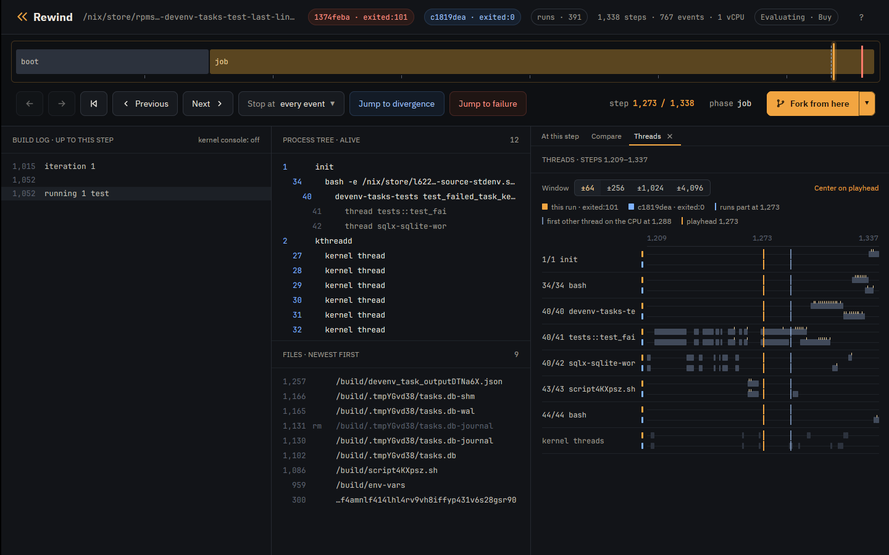

Case study
Case study: lost task output in devenv
devenv could drop the last lines a task printed. This is a
known bug, reported in
cachix/devenv#2281 and fixed by
the maintainer in
cachix/devenv#2296. Rewind VM
reproduced it, gdb in the VM shows tokio::select! taking the child's exit with
a line still buffered, and the fix passes every schedule.
The code
devenv-tasks runs each task as a child process and reads its output a line at
a time in one tokio::select! loop (task_state.rs at 1.10.1):
loop {
tokio::select! {
result = stdout_reader.next_line(), if !stdout_closed => {
match result {
Ok(Some(line)) => {
...
stdout_lines.push((std::time::Instant::now(), line));
},
Ok(None) => {
stdout_closed = true;
},
...
}
}
result = stderr_reader.next_line(), if !stderr_closed => {
...
}
result = child.wait() => {
match result {
Ok(status) => {
...
if status.success() {
return Ok(TaskCompleted::Success(now.elapsed(), Self::get_outputs(&outputs_file).await));
} else {
return Ok(TaskCompleted::Failed(
now.elapsed(),
TaskFailure {
stdout: stdout_lines,
stderr: stderr_lines,
error: format!("Task exited with status: {status}"),
},
));
}
},
When the child.wait() branch runs, the function returns with the lines it has
so far.
The test
The derivation adds one test to devenv-tasks' unit tests and runs only that
test (flake):
#[tokio::test]
async fn test_failed_task_keeps_last_lines() -> Result<(), Error> {
let temp_dir = TempDir::new().unwrap();
let db_path = temp_dir.path().join("tasks.db");
let script = create_script("#!/bin/sh\necho line1\necho line2\necho line3\nexit 1\n")?;
let tasks = Tasks::builder(
Config::try_from(json!({
"roots": ["myapp:task_1"],
"run_mode": "all",
"tasks": [{ "name": "myapp:task_1", "command": script.to_str().unwrap() }]
}))
.unwrap(),
VerbosityLevel::Verbose,
Shutdown::new(),
)
.with_db_path(db_path)
.build()
.await?;
tasks.run().await;
match inspect_tasks(&tasks).await.as_slice() {
[(_, TaskStatus::Completed(TaskCompleted::Failed(_, failure)))] => {
let lines: Vec<&str> = failure.stdout.iter().map(|(_, l)| l.as_str()).collect();
assert_eq!(lines, vec!["line1", "line2", "line3"]);
}
other => panic!("unexpected task statuses: {other:?}"),
}
Ok(())
}Run it
tokio::select! takes its branch order from the VM's randomness, which
--seed sets. Seed 2 fails on the first run:
$ rewind nix --seed 2 'github:fzakaria/rewindvm?dir=examples/case-studies#devenv-last-lines-before-2296'
rewind: packing 57 store paths for devenv-tasks-test-last-lines-before-2296
iteration 1
running 1 test
test tests::test_failed_task_keeps_last_lines ... FAILED
failures:
---- tests::test_failed_task_keeps_last_lines stdout ----
[myapp:task_1] line1
[myapp:task_1] line2
thread 'tests::test_failed_task_keeps_last_lines' (41) panicked at devenv-tasks/src/tests/mod.rs:3006:13:
assertion `left == right` failed
left: ["line1", "line2"]
right: ["line1", "line2", "line3"]
...
rewind: run 81b5bb745c2ef3e6 exited:101 after 1234 steps, 0.034s virtual, 0.346s wall (poweroff)
$ rewind replay 81b5bb74
identical: 767 events over 1234 stepsThe task printed three lines and devenv kept two, as in the issue.
How often it fails
$ rewind check --seed 2 --all --schedules 256 'github:fzakaria/rewindvm?dir=examples/case-studies#devenv-last-lines-before-2296'
schedule 0: exited:101 1234 steps run 81b5bb745c2ef3e6
schedule 1: exited:101 1258 steps run a3729e93e94d6aa0
schedule 2: exited:101 1328 steps run 60b944913ee157a1
schedule 3: exited:101 1337 steps run dca729acfe308cb9
...
schedule 256: exited:101 1326 steps run 46ee295f5306979b
schedule 0 failed; 50 of 256 perturbed schedules ended differently
schedule 12 passes where schedule 0 fails; narrowing the steps it perturbs
perturbing only steps 518..1270 still ends differently
step 1269 decides it: a reschedule there makes the run pass
passing: run ce9c756366a37c55, schedule 12 over steps 518..1270
failing: run f800da6bd5088cca, schedule 12 over steps 518..1269
the two are the same run until step 1269
where /nix/store/195dbbvj5h0yq9f4vnp833dsbgxpp8w0-devenv-tasks-tests-1.10.1/bin/devenv-tasks-tests test_failed_task_keeps_last_lines first behaves differently:
both 1166 40/42 open("/build/.tmpJp3M0f/tasks.db-shm", 0o2400102)
both 1257 40/41 open("/build/devenv_task_output26U1TT.json", 0o2000302)
both 1264 40/41 fork() = 43
failing 1273 40/41 SIGCHLD code=1 addr=0x0
failing 1284 40/41 unlink("/build/devenv_task_output26U1TT.json")
failing 1291 40/41 unlink("/build/scriptT2boZm.sh")
failing 1292 40/41 unlink("/build/.tmpJp3M0f/tasks.db-shm")
passing 1297 40/41 unlink("/build/devenv_task_output26U1TT.json")
passing 1304 40/41 unlink("/build/scriptT2boZm.sh")
passing 1305 40/41 unlink("/build/.tmpJp3M0f/tasks.db-shm")
passing 1306 40/41 unlink("/build/.tmpJp3M0f/tasks.db-wal")
open both in the desktop app: rewind open f800da6bd5088cca 1273 --compare ce9c756366a37c55
207 of 257 runs fail, all with ["line1", "line2"]. In the failing run of the
narrowed pair, the shell's SIGCHLD reaches the test's thread 41 at step 1273, before the
task is done; in the passing run it does not.
Who had the CPU
rewind threads prints which thread held the CPU through each stretch of
steps, here for the failing run and then the passing one:
$ rewind threads f800da6bd5088cca --from 1260 --to 1300
1260 1261 40/41 tests::test_fai
1262 1262 kernel 11 ksoftirqd/0
1263 1264 40/41 tests::test_fai
1265 1270 43/43 scriptT2boZm.sh
1271 1271 kernel 11 ksoftirqd/0
1272 1297 40/41 tests::test_fai
1298 1299 kernel 11 ksoftirqd/0
1300 1300 40/40 devenv-tasks-te
$ rewind threads ce9c756366a37c55 --from 1260 --to 1300
1260 1261 40/41 tests::test_fai
1262 1262 kernel 11 ksoftirqd/0
1263 1264 40/41 tests::test_fai
1265 1270 43/43 scriptT2boZm.sh
1271 1271 kernel 11 ksoftirqd/0
1272 1287 40/41 tests::test_fai
1288 1289 kernel 11 ksoftirqd/0
1290 1292 43/43 scriptT2boZm.sh
1293 1293 kernel 11 ksoftirqd/0
1294 1300 40/41 tests::test_faiIn the failing run the shell (43) finishes exiting before thread 41 runs. In the passing run the reschedule at step 1269 sends the shell off the CPU before its exit is done, and it finishes only at 1290. The app's Threads tab shows the same:

Perturbing only from step 1158, where the run forks the task's shell, gives about the same pass rate, so the outcome is decided after the task starts:
$ rewind check --run 81b5bb74 --schedule-from 1158 --schedules 64 --all --no-narrow
schedule 0: exited:101 1234 steps run 81b5bb745c2ef3e6
schedule 1: exited:101 1250 steps run 285a73bbf713624c
schedule 2: exited:101 1255 steps run c4b1b4f920210e73
schedule 3: exited:101 1244 steps run 6a936f2e9f842af7
...
schedule 64: exited:0 1286 steps 77ac62e2629d run c8fbd031eb1c0604
run 81b5bb745c2ef3e6 failed; 15 of 64 perturbed schedules ended differentlyWhere the third line went
The events of schedule 0's run around the task:
$ rewind events 81b5bb74 --from 1150 --to 1170
1155 40/41 open("/build/devenv_task_outputnbzDbE.json", 0o2000302)
1158 40/41 fork() = 43
1162 43/43 execve("/build/script08XGOT.sh", ["/bin/sh", "/build/script08XGOT.sh"])
1163 43/43 exit_group(script08XGOT.sh) exited:1
1166 40/41 SIGCHLD code=1 addr=0x0
The shell prints all three lines and exits before the loop reads anything.
rewind gdb opens gdb on a fork of the run at a step. Break on
read of the stdout pipe (fd 13) and on the child.wait() branch:

-
The timeline
Step 1,166 of 1,234, four steps after the run left the passing one.
-
Build log
The test has started and nothing from the task is in the log. Its three lines are in the pipe, unread.
-
At this step
SIGCHLD reaches thread 41 of the test process: the task's shell has exited.
-
Divergence
The run left ce9c7563 at step 1,162, where the shell starts the task's script.
$ rewind gdb 81b5bb74 1155 -- -batch -ex 'break read if $rdi == 13' -ex 'break task_state.rs:409' -ex continue -ex 'set $buf = $rsi' -ex finish -ex 'x/s $buf' -ex 'delete 1' -ex continue
rewind: step 1155 ran in process 40; loading symbols for 5 of its files
rewind: source files for /nix/store/195dbbvj5h0yq9f4vnp833dsbgxpp8w0-devenv-tasks-tests-1.10.1 from /nix/store/hs2328bm8f7s0cq77jjjgdlcqrc13mhm-source
rewind: gdb at step 1155 of 81b5bb745c2ef3e6
arch_local_irq_restore (flags=514) at ./arch/x86/include/asm/irqflags.h:146
146 return !(flags & X86_EFLAGS_IF);
[Switching to thread 3 (Thread 1.41)]
#0 __syscall_cancel_arch () at ../sysdeps/unix/sysv/linux/x86_64/syscall_cancel.S:56
56 ret
Breakpoint 1 at 0x7f95b0d31190: file ../sysdeps/unix/sysv/linux/read.c, line 25.
Breakpoint 2 at 0x5568a5fdf8a7: task_state.rs:409. (2 locations)
Thread 3 hit Breakpoint 1, __GI___libc_read (fd=13, buf=0x7f95ac015f20, nbytes=8192) at ../sysdeps/unix/sysv/linux/read.c:25
25 {
0x00005568a62b69bd in std::fs::{impl#9}::read (buf=Python Exception <class 'gdb.error'>: value has been optimized out
&mut [u8](size=8192), self=<optimized out>) at /rustc/48a229ceaefd4985c50990b14116b6d856af0985/library/std/src/fs.rs:1335
warning: 1335 /rustc/48a229ceaefd4985c50990b14116b6d856af0985/library/std/src/fs.rs: No such file or directory
Value returned is $1 = 18
0x7f95ac015f20: "line1\nline2\nline3\n"
Thread 3 hit Breakpoint 2.1, devenv_tasks::task_state::{impl#1}::run::{async_fn#0}::{async_block#0}::{async_block#0} () at devenv-tasks/src/task_state.rs:415
415 let expanded_paths = expand_glob_patterns(&self.task.exec_if_modified);
[Inferior 1 (process 1) detached]
One read returns all three lines into the BufReader. The loop takes two of
them, then takes the child.wait() branch with line3 still
buffered, and returns.
Root cause
Without biased;, tokio::select! polls its branches in a random
order on each pass. Once the child has exited, child.wait() is ready on every
pass, and so is each buffered line. Each pass is a draw between "take the next line" and
"return now", and any line still buffered when child.wait() wins is lost.
The window opens when the exit is visible before the output is read. On one CPU the shell
often runs from execve to exit without giving up the CPU, so the
output and the exit are waiting together when the loop starts.
The fix, checked
The fix (de0dc6a8) stores the exit status, turns the child.wait() branch off, and keeps
reading until both pipes are closed:
loop {
+ // If child has exited and both pipes are closed, we're done
+ if exit_status.is_some() && stdout_closed && stderr_closed {
+ break;
+ }
+
tokio::select! {
...
- result = child.wait() => {
+ result = child.wait(), if exit_status.is_none() => {
...
- if status.success() {
- return Ok(TaskCompleted::Success(now.elapsed(), Self::get_outputs(&outputs_file).await));
- } else {
- ...
- }
+ // Store exit status and continue draining pipes
+ exit_status = Some(status);The same test at the merge commit passes every schedule:
$ rewind check --seed 2 --all --schedules 256 'github:fzakaria/rewindvm?dir=examples/case-studies#devenv-last-lines-2296'
rewind: packing 57 store paths for devenv-tasks-test-last-lines-2296
schedule 0: exited:0 1259 steps 77ac62e2629d run cf2425f775f0be3d
schedule 1: exited:0 1297 steps 77ac62e2629d run 526f8e3e7b7947a2
schedule 2: exited:0 1355 steps 77ac62e2629d run 467780b75b06c24a
...
0 of 256 perturbed schedules ended differently
same result under all 257 schedulesOn the host the unfixed test passed 1000 of 1000 runs on 16 CPUs, and 1000 of 1000 pinned to one CPU.
The recording
Both files are in the case-studies release:
-
devenv-task-output-race.rwd
(10.0 KB), the trace, for
rewind events,rewind logand the app. -
devenv-task-output-race-replayable.rwd
(185.1 MB), with the kernel, input image and keyframes, for
rewind replay,rewind gdbandrewind shell.
$ rewind import https://github.com/fzakaria/rewindvm/releases/download/case-studies/devenv-task-output-race-replayable.rwd
$ rewind replay 81b5bb74
$ rewind gdb 81b5bb74 1155
$ rewind-app https://github.com/fzakaria/rewindvm/releases/download/case-studies/devenv-task-output-race.rwd